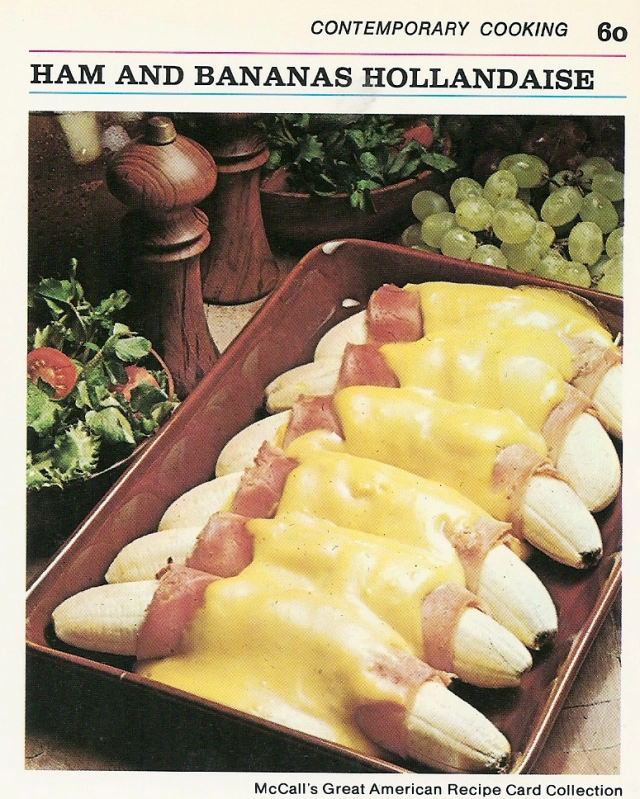

Ham and Bananas Hollandaise

In this quirky culinary creation from the 1970s, bananas find themselves in an unexpected role. Originally featured in the 1973 edition of McCall’s Great American Recipe Card Collection, this unique dish unites bananas and ham, generously coated with lemon juice, mustard, and hollandaise sauce. The result is a piping-hot, potassium-rich concoction that takes your taste buds on an unforgettable journey straight from the oven.
Ingredients
- 6 medium bananas
- 1/4 cup lemon juice
- 6 thin slices boiled ham (about 1/2 lb)
- 3 tablespoons prepared mustard
- 2 envelopes (1 1/4-oz size) hollandaise sauce mix
- 1/4 cup light cream
Steps
- Preheat oven to 400°F. Lightly butter 2-quart, shallow baking dish.
- Peel bananas; sprinkle each with 1/2 tablespoon lemon juice to prevent darkening.
- Spread ham slices with mustard. Wrap each banana in a slice of ham. Arrange in a single layer in the casserole. Bake for 10 minutes.
- Meanwhile, make sauce: In a small saucepan, combine sauce mix with 1 cup of water, 1 tablespoon of lemon juice, and cream. Heat, stirring, to boiling; pour over bananas. Bake for 5 minutes longer, or until slightly golden.
- Nice with a green salad for brunch or lunch. Makes 6 servings.